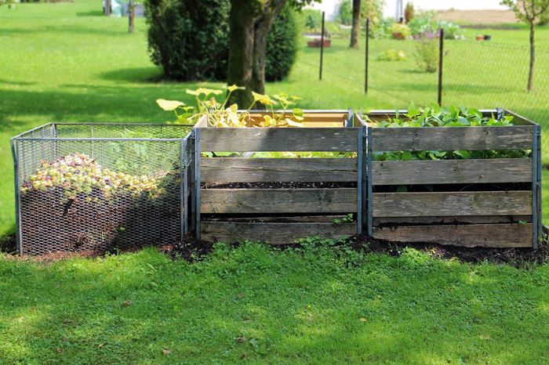

Collectivité Locale
CONTEXTE REGLEMENTAIRE
Les contraintes réglementaires actuelles (Hausse de la TGAP) et à venir (Loi AGEC : généralisation du tri à la source des biodéchets au 31 décembre 2023, objectif de réduction des déchets) remettent en question le modèle économique de la gestion des déchets sur le territoire.
A partir de 2024, l'ensemble des biodéchets de la collectivité devra être trié à la source, et sera traité (conformément à la législation) dans l'une des filières suivantes :
- compostage dans le cadre d'une gestion de proximité des biodéchets,
- collecte sélective à destination d'une plateforme industrielle de compostage avec un agrément sanitaire et/ou méthaniseur.
Les orientations qui vont être prises par les élus, vont soit générer des coûts supplémentaires (collecte séparée) soit être source d'économies (et ainsi amortir la hausse de TGAP) avec l'adhésion des citoyens à un projet de gestion de proximité des biodéchets sur le territoire.

LA PROPOSITION SYNERGIES SVA
Synergies SVA (membre du Réseau Compost Citoyen) est votre partenaire pour déployer une politique P-Gprox (Prévention et Gestion de proximité des biodéchets) sur votre territoire.
- Accompagnement projet : Animation de groupes de travail locaux P-GProx (Prévention et Gestion de Proximité des biodéchets). Animation de votre réseau de référents locaux : Hotline SOS compost, organisation d'évènements pour structurer le réseau et gratifier les bénévoles (selon le plan d’action établi par la collectivité)
- Diagnostic, accompagnement et suivi de sites de compostage de proximité : compostage individuel, compostage collectif ( en pied d'immeuble, quartier, établissement public ou privé), plateforme de compostage artisanale
- Sensibilisations et animations : prévention gaspillage alimentaire , broyage déchets verts, compostage, faune et flore du sol, cycle matière organique...) sous forme d'atelier pour adulte ou animation pour les enfants (intervention milieu scolaire, centre de loisir)